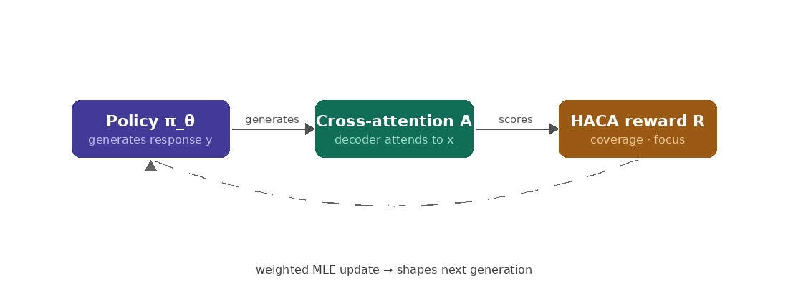
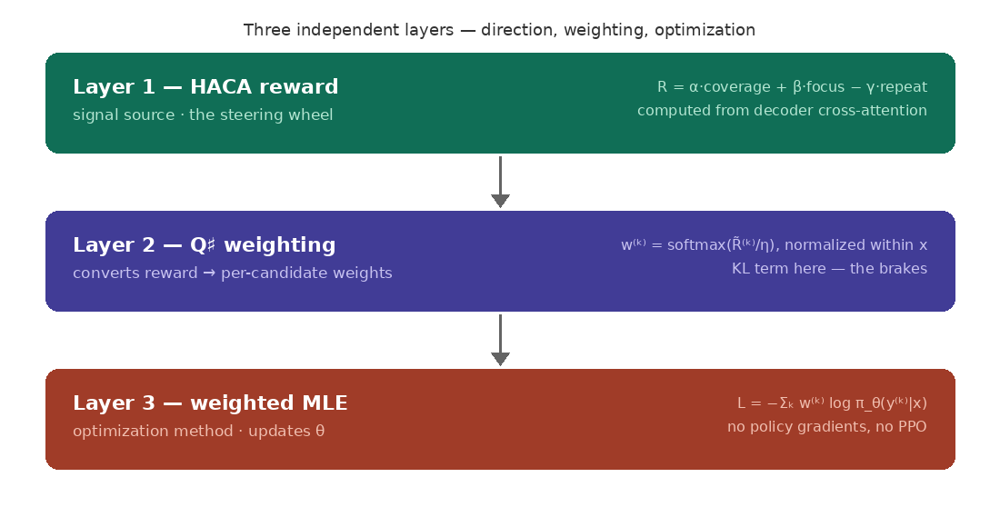
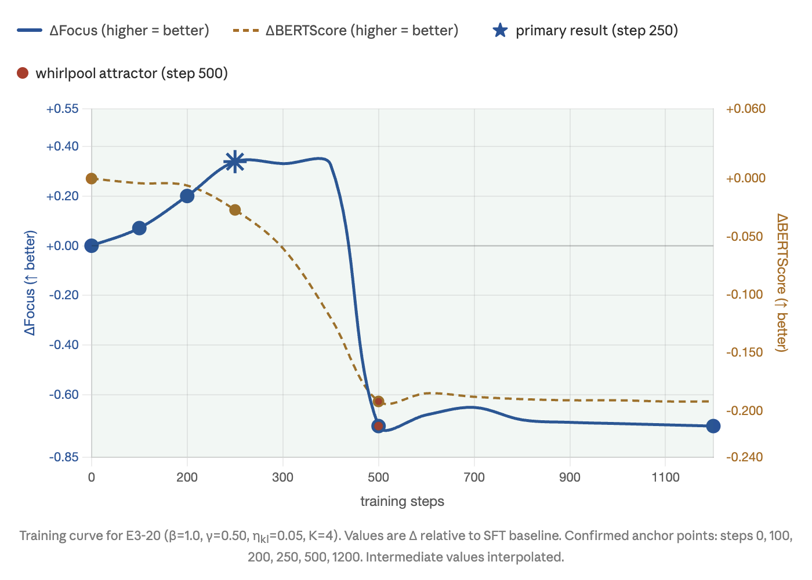

Georgia Institute of Technology · aliss6@gatech.edu
Contents
Abstract
What occurs in the mind as two human beings engage in conversation? Is it a binary interplay where each person responds to the other, or do they create a shared context to reach a mutually optimal state? We examined this question through the medium of large language models (LLMs). LLMs have made breakthroughs across many domains through their ability to synthesize and generate natural language outputs. However, LLMs were originally designed as single-turn next-best-token predictors and treat each conversational turn as an independent inference call with no persistent dynamic state. In this experiment, we proposed a computational framework that measurably improves LLM outputs by turning the dynamic system hypothesis of cognitive science into an algorithmic formulation. We introduce Attention Fine-Tuning (AFT), a post-training framework that operationalizes conversational flow as a trajectory through attentional state space. This framework produced a model that learned to navigate toward an improved reward, showing +9.2% increase in conversation quality over baseline, while demonstrating objectively different responses without semantic collapse. We also observed the model was constrained by the choice of dataset, yielding limited conversational diversity, parameter invariance in key components, and collapse into overfitting during extended training. The initial results validate the hypothesis on a limited dataset. Future work will repeat this process on a larger dataset with greater semantic diversity to test the generalizability of AFT.
Conversation is a prototypical form of distributed cognition. Participants do not merely exchange discrete messages. They continuously update shared context, negotiate meaning, track commitments, and adjust intentions in response to moment-by-moment shifts in attention and emphasis. Conversation is not a sequence of static symbolic acts: it is a flow, a dynamical process in which the structure of prior exchange continuously shapes what comes next.
Understanding that flow, and teaching artificial intelligence to model it, is the central problem this paper addresses.
Cognitive science has wrestled with the nature of intelligent behavior across several generations of theoretical frameworks. The classical tradition treats cognition as the manipulation of symbolic representations by a rational agent pursuing goals. Brooks broke from this tradition with a bold provocation: building mobile robots that exhibited intelligent behavior with no internal world-model, he concluded that representation is the wrong unit of abstraction. Intelligent behavior, Brooks argued, does not emerge from correct symbolic descriptions of the world. It emerges from interactions with the environment as a dynamic system: "the world is its own best model."
This intuition finds a striking empirical parallel in computer vision. The paper "Generative Image Dynamics" demonstrated that realistic visual motion can be learned entirely by modeling how representations transform over time, rather than encoding static frames. If visual dynamics can be recovered from representational flow, the same principle may generalize to conversational dynamics: what matters is not what a model knows at a given turn, but how its internal representations move across turns.
Van Gelder's Dynamical Hypothesis gives this intuition its formal cognitive science grounding: cognitive agents are dynamical systems, and the right unit of cognitive analysis is the trajectory of the system through state space over time. Kelso's empirical program on coordination dynamics establishes the specific phenomenology: cognitive systems organize around attractors, stable configurations toward which the system's trajectory converges. Healthy cognition navigates a rich attractor landscape, moving fluidly between basins in response to environmental input.
Large language models present a subtle but consequential mismatch with the dynamical account above. Within a single forward pass, a transformer can attend over an entire serialized conversation history. But across turns, the system is stateless: each new generation call recomputes everything from scratch, with no persistent internal state that tracks how attentional dynamics have evolved across the dialogue. This turn-level stationarity is not a minor engineering limitation; it is a structural mismatch between how LLMs process conversation and how cognition actually works. Empirically, studies have found that LLMs exhibit significantly lower performance in multi-turn settings than single-turn, with an average drop of 39% across generation tasks.
The transformer's decoder cross-attention provides the mechanism for addressing this limitation. At each generation step, cross-attention allocates weight across the tokens of conversational history — an observable trace of how prior context is being integrated in real time. We treat this not as an implementation detail but as the cognitive signal of interest: the trajectory of attentional allocation across a response is the dynamical fingerprint of conversational flow.
The HACA reward formalizes this intuition into a trainable signal, measuring both the breadth of history integration (coverage) and its concentration (focus, via entropy). Together they operationalize attentional flow: not merely what the model retrieves from history, but how purposefully it moves through it.
Together, these components form Attention Fine-Tuning (AFT): a post-training framework that treats cross-attention dynamics as the primary learning signal rather than an incidental byproduct of token prediction.
We hypothesize that a language model post-trained with AFT will demonstrate measurably improved conversational flow relative to both a pretrained baseline and a supervised fine-tuned model. Specifically:
Uniqueness: AFT post-training will produce qualitatively distinct completions, measurably different in attentional structure.
Correctness: The AFT model will show improved HACA reward signal without material degradation in BERTScore, demonstrating that attentional improvement does not require sacrificing linguistic quality.
The system is built on T5-Large (~770M parameters), a sequence-to-sequence transformer, fine-tuned on the MultiWOZ 2.1 task-oriented dialogue corpus. AFT post-training is initialized from the SFT checkpoint. All GPU computation was executed on Modal cloud infrastructure (NVIDIA A10G). Experiment tracking used CometML.
The HACA reward quantifies the quality of attentional dynamics by combining three components into a single scalar signal:
Coverage measures breadth of history integration:
Focus measures concentration of attentional allocation via entropy:
A repeat penalty discourages n-gram repetition, preventing the policy from exploiting length as a proxy for reward.


The AFT framework implements KL-regularized soft value improvement as weighted maximum likelihood estimation. For each training prompt $x$, $K$ candidate responses are sampled from the current policy. Rewards are normalized within the same prompt:
Per-prompt softmax weights are then computed:
The weighted MLE objective:
With optional KL anchoring toward the frozen SFT reference:
Three empirical stability boundaries were established: (1) $\gamma \geq 0.50$ at $\beta = 1.0$ to prevent length-expansion attractors; (2) $\beta \leq 1.0$ to keep the policy within the KL anchor's containment capacity; (3) $\eta_{\text{kl}} \leq 0.05$ to avoid destructive gradient interference. The winning configuration E3-20 ($\beta{=}1.0$, $\gamma{=}0.50$, $\eta_{\text{kl}}{=}0.05$, $K{=}4$) sits inside all three stability constraints simultaneously.

The winning configuration at step 250 achieves $\Delta\text{Focus} = {+}0.338$ and $\Delta\text{BERTScore} = {-}0.027$ — meaningful attentional improvement at a modest and acceptable semantic cost. Beyond step 500 the policy enters an attractor state, converging on degenerate response patterns reflecting exploitation of reward proxy artifacts rather than genuine conversational quality.
Table 1. Phase F test evaluation results (7,372 examples, 1,000 unique dialogues). AFT step 250 (★) is the primary result. Focus: closer to zero is better. Repeat: lower is better. BERTScore: higher is better.
| Model | Focus | Repeat | BERTScore | Avg Len |
|---|---|---|---|---|
| Base T5-Large | -3.333 | 0.146 | 0.672 | 113.3 |
| T5-Large SFT | -3.656 | 0.024 | 0.804 | 37.3 |
| AFT step 250 ★ | -3.318 | 0.042 | 0.777 | 41.4 |
| AFT step 500 | -4.381 | 0.081 | 0.612 | 114.0 |
Both components of the hypothesis are confirmed. Uniqueness is confirmed: AFT step 250 produces attentionally distinct outputs with a focus improvement of +0.338 units (+9.2%). Correctness is confirmed: the AFT model improves on the primary learning signal (focus) without material degradation in linguistic quality (BERTScore loss of 0.027, with median per-example loss of only 0.011).
Table 2. Qualitative comparison of SFT and AFT step 250 responses on held-out MultiWOZ test examples. In all five cases AFT correctly retrieves named entities where SFT returns factually incorrect apologies.
| Metrics | SFT | AFT step 250 |
|---|---|---|
| User: I would also like to visit a nightclub in the south. PMUL1259 t.11 | ||
| +0.804F +0.072BS |
"I'm sorry, there are no nightclubs in the south." incorrect | "I recommend the Soul Tree nightclub. It's located at 1-6 Corn Exchange Street. Would you like more information?" correct entity |
| User: Can you help me find a place to go, something to do with architecture? PMUL3976 t.5 | ||
| +0.819F +0.062BS |
"I'm sorry, there aren't any architecture attractions in town." incorrect | "There are 4 options. I recommend All Saints Church on Jesus Lane. It's free to get in. Would you like more information?" correct retrieval |
| User: I'm looking for a Chinese restaurant near the hotel. PMUL0006 t.7 | ||
| +0.730F +0.020BS |
"I'm sorry, there aren't any Chinese restaurants in the south." incorrect | "There are 3 options. I recommend the Peking Restaurant. Would you like me to book a table for you?" correct entity |
A secondary finding is an empirical taxonomy of five distinct attractor states observed when AFT training exceeds the stable 200-500 step window. Each mode maps onto a known cognitive science pattern:
Mode 1: The Dam
Perseveration
Policy locks onto a fixed response template regardless of conversational input. Every response ends with the same Cambridge TownInfo booking confirmation.
Mode 2: The Whirlpool
Rumination
Policy generates maximally long outputs with apparent elaboration but no genuine forward progress. 114-token outputs that repeat clarifying questions without returning an entity.
Mode 3: The Underground River
Disengagement
Policy routes all conversations into a generic service closing without processing the history. "Is there anything else I can help you with?" in over 10% of all outputs.
Mode 4: The Dry Riverbed
Anchoring
Reward gradient too weak to drive policy movement. KL penalty holds the model near SFT initialization. $\Delta\text{Focus} < +0.05$ after 500 steps.
Mode 5: The Flash Flood
Cognitive Disintegration
Competing reward and KL gradients produce destructive interference, filling the generation budget with semantically incoherent token sequences. "Star Trek Trek Trek Trek..." filling the full 128-token generation budget. Training loss goes negative (-724 at step 915). The only mode where language structure itself breaks down.
SFT and AFT post-training are not two points on the same improvement curve. They train fundamentally different things. SFT learns the training distribution: it acquires the statistical patterns of well-formed dialogue. In Newell's Knowledge Level framing, SFT produces an agent that knows what dialogue responses look like.
AFT builds on SFT to directly optimize attention structure, producing a model that has discovered a behavioral strategy that does not exist in the training data: more decisive, information-dense responses that attend selectively to constraint tokens and retrieve specific entities. In Van Gelder's dynamical framing, AFT produces an agent that has learned something about the trajectory of attention across a response. SFT teaches the model what dialogue looks like. AFT teaches it how to use history.
BERTScore is an imperfect proxy for semantic quality. Coverage was structurally inactive on MultiWOZ, meaning only two of the three HACA dimensions contributed to training. The experiment was conducted on a single dataset of shallow attentional topology, which limits generalizability. The repeat penalty threshold ($\gamma = 0.50$) proved insufficient to suppress the question-chain failure mode entirely.
AFT post-training with HACA reward shaping produces measurable, reproducible improvement in cross-attention focus within a stable training window of 200-500 steps. The immediate next experiment is running the identical AFT pipeline on a corpus with richer attentional topology, such as DailyDialog or Wizard of Wikipedia, which would activate the coverage dimension of HACA and extend the training horizon.
A deeper implication of the AFT framework extends beyond the dialogue domain. The self-supervised nature of HACA reward suggests a generalizable post-training paradigm for frontier models. Current RLHF pipelines face a fundamental scaling constraint: human preference data is expensive, slow to collect, and difficult to generalize. AFT sidesteps this constraint entirely. For any task where history integration quality can be operationalized as an attentional property, the reward signal is already present in the model.
The deeper question the research program is building toward is whether the same principle can be extended to decoder-only transformer architectures that power today's frontier language models. Whether self-attention patterns in these architectures can be similarly operationalized as a reward signal remains an open question. If it can, the implication is significant: a self-supervised, annotation-free post-training paradigm grounded in the model's own attentional dynamics could provide an alternative to human-feedback-dependent alignment for the class of tasks where conversational quality is the objective.
An interactive demo accompanies this paper, presenting SFT and AFT step 250 responses side-by-side with cross-attention heatmaps. The GitHub repository is also available.
The five attractor states documented during AFT post-training are described here in full. These modes are generalizable failure regimes of language model post-training under reward shaping; they are observed with particular clarity on MultiWOZ because the corpus's shallow attentional topology exhausts the genuine reward signal within 200-500 steps.
The policy locks onto the Cambridge TownInfo booking confirmation template on turn-final positions, producing the same closing response regardless of conversational context.
Metric signature: Unique output count declining below 155/200; BERTScore falling on closing turns.
Early warning: Unique output count declining below 155 at any checkpoint.
The policy generates maximally long outputs attending to a concentrated set of tokens across many timesteps. Apparent elaboration, no genuine forward progress.
Metric signature: Mean output length rising toward max_new_tokens; repeat penalty > 0.03; training loss rising for 50+ consecutive steps.
Early warning: Loss rising for 50+ consecutive steps while reward also rises.
The policy routes all conversations into a formulaic service closing without processing the specific history of the exchange. The response is grammatically correct but ignores what the user actually requested.
Metric signature: Generic closing phrase appearing in 10-15% of outputs; low focus, low repeat, low BERTScore.
Early warning: Stable closing template frequency creeping above 10% of outputs.
Minimal policy movement. The reward gradient is too weak relative to the KL penalty to drive meaningful learning; the policy remains anchored near its SFT initialization.
Metric signature: $\Delta\text{Focus} < +0.10$ after 500 steps; BERTScore flat; outputs statistically indistinguishable from SFT baseline.
Early warning: $\Delta\text{Focus}$ not growing beyond +0.05 at step 100.
Triggered by $\eta_{\text{kl}} \geq 0.10$. Destructive interference between the reward gradient and the KL gradient produces outputs that fill the generation budget with arbitrary repeated tokens ("Star Trek Trek Trek Trek...") with no semantic content. Loss goes negative (reaching -724 at step 915).
Metric signature: Length ~max_new_tokens; unique output count at ceiling (200/200); BERTScore < 0.65; loss negative.
Early warning: BERTScore dropping > 0.05 per 100 steps while length is rising.
Unlike the other four modes, which produce coherent but wrong responses, the Flash Flood produces responses in which language structure itself breaks down.